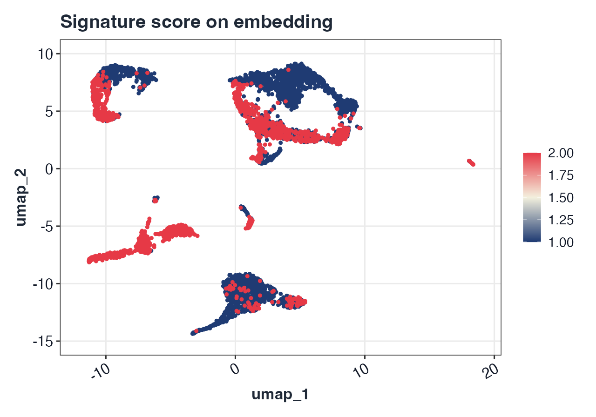
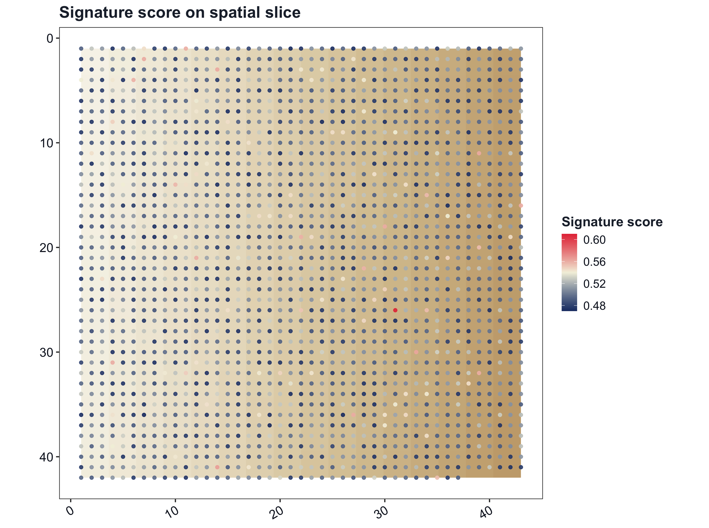
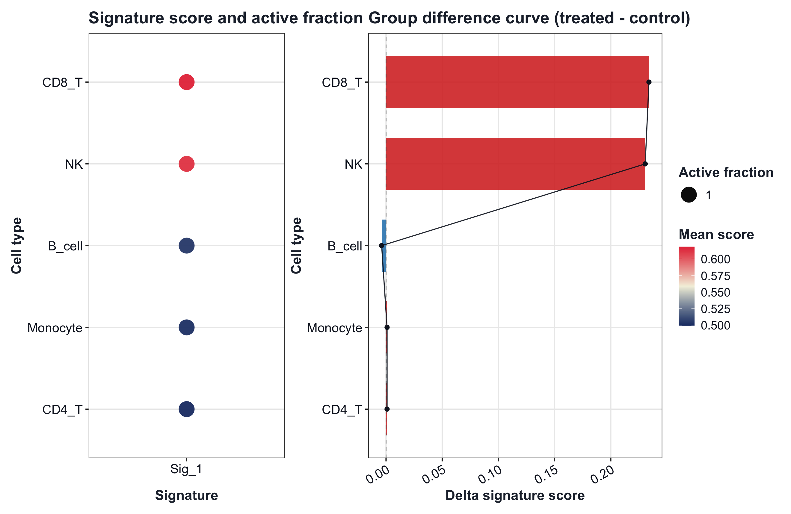
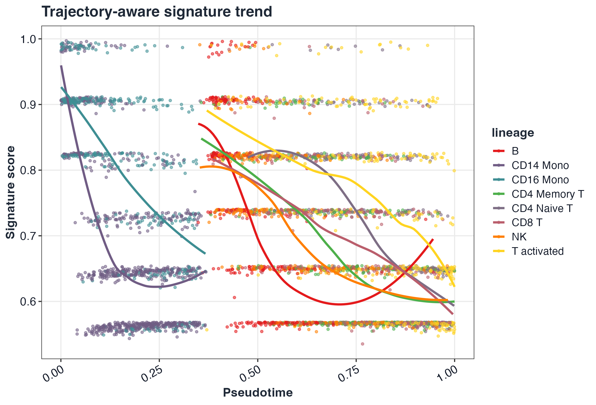

GLEAM: Gene-set and cell-state exploration across space and time in R


GLEAM provides pathway/signature scoring, cell-state exploration, differential analysis after scoring, trajectory-aware mapping, and spatial transcriptomics analysis for both matrix-native and Seurat workflows. Built-in geneset examples focus on human and mouse, and custom genesets remain fully supported for other species.
Installation
if (!requireNamespace("devtools", quietly = TRUE)) install.packages("devtools")
devtools::install_github("JamesWu7/GLEAM")Navigation: Documentation | Reference | Tutorials | Citation
Workflow highlights
Figures below are generated from scripts/GLEAM_homepage_showcase.Rmd via scripts/generate_homepage_figures.R.




Quick start (Seurat scRNA-seq)
library(GLEAM)
library(Seurat)
ifnb_path <- system.file("extdata", "full_examples", "ifnb_seurat.rds", package = "GLEAM")
if (ifnb_path == "") ifnb_path <- file.path("inst", "extdata", "full_examples", "ifnb_seurat.rds")
seu <- readRDS(ifnb_path)
pick_first_col <- function(candidates, cols) {
hit <- candidates[candidates %in% cols]
if (length(hit) == 0L) return(NULL)
hit[[1]]
}
stratified_keep <- function(meta, n_target, strata_candidates = character()) {
if (nrow(meta) <= n_target) return(rownames(meta))
strata <- intersect(strata_candidates, colnames(meta))
all_ids <- rownames(meta)
if (length(strata) == 0L) return(all_ids[seq_len(n_target)])
key <- interaction(meta[, strata, drop = FALSE], drop = TRUE, lex.order = TRUE)
groups <- split(all_ids, key)
per_group <- max(1L, floor(n_target / max(1L, length(groups))))
keep <- unlist(lapply(groups, function(ids) {
ids <- sort(ids)
head(ids, per_group)
}), use.names = FALSE)
if (length(keep) < n_target) {
keep <- c(keep, head(setdiff(all_ids, keep), n_target - length(keep)))
}
unique(keep)[seq_len(min(n_target, length(unique(keep))))]
}
if (ncol(seu) > 5000) {
keep <- stratified_keep(
meta = seu@meta.data,
n_target = 5000,
strata_candidates = c("orig.ident", "stim", "seurat_annotations", "seurat_clusters")
)
seu <- subset(seu, cells = keep)
}
md <- seu@meta.data
sample_col <- pick_first_col(c("sample", "orig.ident"), colnames(md))
if (is.null(sample_col)) {
md$sample <- "sample_1"
sample_col <- "sample"
} else if (sample_col != "sample") {
md$sample <- as.character(md[[sample_col]])
}
group_col <- pick_first_col(c("stim", "group"), colnames(md))
if (is.null(group_col)) {
md$group <- ifelse(seq_len(nrow(md)) <= nrow(md) / 2, "A", "B")
group_col <- "group"
} else if (group_col != "group") {
md$group <- as.character(md[[group_col]])
}
celltype_col <- pick_first_col(c("seurat_annotations", "celltype", "seurat_clusters"), colnames(md))
if (is.null(celltype_col)) {
md$celltype <- as.character(Idents(seu))
celltype_col <- "celltype"
} else if (celltype_col == "seurat_clusters") {
md$celltype <- paste0("cluster_", md$seurat_clusters)
} else if (celltype_col != "celltype") {
md$celltype <- as.character(md[[celltype_col]])
}
if (length(unique(md$sample)) < 2L) {
md$sample <- ifelse(seq_len(nrow(md)) <= nrow(md) / 2, "sample_A", "sample_B")
}
if (length(unique(md$group)) < 2L) {
s1 <- unique(md$sample)[1]
md$group <- ifelse(md$sample == s1, "A", "B")
}
seu@meta.data <- md
if (!"pca" %in% names(seu@reductions)) seu <- RunPCA(seu)
if (!"umap" %in% names(seu@reductions)) seu <- RunUMAP(seu, dims = 1:20)
hallmark_gs <- get_geneset("hallmark", source = "builtin", species = "human")
sc <- score_signature(object = seu, geneset = hallmark_gs, geneset_source = "list", seurat = TRUE, method = "ensemble", min_genes = 3)
res <- test_signature(sc, group = group_col, sample = "sample", celltype = celltype_col, level = "pseudobulk")
top_pw <- res$table$pathway[order(res$table$p_adj)][1]
p1 <- plot_embedding_score(sc, pathway = top_pw, object = seu, reduction = "umap")
p2 <- plot_violin(sc, pathway = rownames(sc$score)[1], group = group_col)
if (requireNamespace("patchwork", quietly = TRUE)) {
p1 + p2 + patchwork::plot_layout(ncol = 2)
} else {
p1
p2
}
Quick start (Seurat spatial)
library(GLEAM)
library(Seurat)
st_path <- system.file("extdata", "full_examples", "stxBrain_anterior1_seurat.rds", package = "GLEAM")
if (st_path == "") st_path <- file.path("inst", "extdata", "full_examples", "stxBrain_anterior1_seurat.rds")
st <- readRDS(st_path)
pick_first_col <- function(candidates, cols) {
hit <- candidates[candidates %in% cols]
if (length(hit) == 0L) return(NULL)
hit[[1]]
}
stratified_keep <- function(meta, n_target, strata_candidates = character()) {
if (nrow(meta) <= n_target) return(rownames(meta))
strata <- intersect(strata_candidates, colnames(meta))
all_ids <- rownames(meta)
if (length(strata) == 0L) return(all_ids[seq_len(n_target)])
key <- interaction(meta[, strata, drop = FALSE], drop = TRUE, lex.order = TRUE)
groups <- split(all_ids, key)
per_group <- max(1L, floor(n_target / max(1L, length(groups))))
keep <- unlist(lapply(groups, function(ids) {
ids <- sort(ids)
head(ids, per_group)
}), use.names = FALSE)
if (length(keep) < n_target) {
keep <- c(keep, head(setdiff(all_ids, keep), n_target - length(keep)))
}
unique(keep)[seq_len(min(n_target, length(unique(keep))))]
}
if (ncol(st) > 3500) {
keep <- stratified_keep(
meta = st@meta.data,
n_target = 3500,
strata_candidates = c("orig.ident", "sample", "seurat_annotations", "seurat_clusters")
)
st <- subset(st, cells = keep)
}
md_st <- st@meta.data
region_col <- pick_first_col(c("seurat_annotations", "region", "seurat_clusters"), colnames(md_st))
if (is.null(region_col)) {
md_st$region <- as.character(Idents(st))
region_col <- "region"
} else if (region_col == "seurat_clusters") {
md_st$region <- paste0("cluster_", md_st$seurat_clusters)
} else if (region_col != "region") {
md_st$region <- as.character(md_st[[region_col]])
}
st@meta.data <- md_st
map_geneset_to_expr <- function(gs, expr_genes) {
expr_genes <- as.character(expr_genes)
expr_upper <- toupper(expr_genes)
mapped <- lapply(gs, function(g) {
idx <- match(toupper(unique(as.character(g))), expr_upper, nomatch = 0L)
unique(expr_genes[idx[idx > 0L]])
})
mapped[vapply(mapped, length, integer(1)) >= 3L]
}
gs_st <- NULL
for (sp in c("mouse", "human")) {
gs_try <- try(get_geneset("hallmark", source = "builtin", species = sp), silent = TRUE)
if (inherits(gs_try, "try-error")) next
gs_try <- map_geneset_to_expr(gs_try, rownames(st))
if (length(gs_try) > 0L) {
gs_st <- gs_try
break
}
}
if (is.null(gs_st) || length(gs_st) == 0L) {
genes <- rownames(st)
n_take <- min(30L, length(genes))
gs_st <- list(Spatial_signature = unique(genes[seq_len(n_take)]))
}
sp <- score_signature(
object = st,
geneset = gs_st,
geneset_source = "list",
seurat = TRUE,
layer = "counts",
slot = "counts",
method = "rank",
min_genes = 3
)
top_sig <- rownames(sp$score)[1]
p1 <- plot_spatial_score(sp, pathway = top_sig, object = st)
p2 <- plot_dot(sp, by = "region")
if (requireNamespace("patchwork", quietly = TRUE)) {
p1 + p2 + patchwork::plot_layout(widths = c(2, 1))
} else {
p1
p2
}
Supported gene-set sources
-
builtin: in-package Hallmark-like and immune collections (human/mouse focus). -
list: user-provided named list. -
gmt: GMT file input viaread_gmt(). -
data.frame: tabular input withpathway+genecolumns. -
msigdb,go,kegg,reactome: optional curated sources (dependency-gated, no silent internet-only behavior).
Visualization parameter guide
- Grouping/faceting:
group,group.by,split.by,region,sample,celltype. - Embeddings:
reduction = "umap"|"pca"|"tsne"in embedding/trajectory plots. - Spatial display: prefer
object = <Seurat spatial object>for native slice rendering;coords+ optionalimageremains available for matrix-mode overlays. - Style controls through theme helpers:
base_size,title_size,axis_text_size,legend_text_size,font_family,font_face,title_color,text_color. - Palette controls: plot-level
paletteplusget_palette(),scale_gleam_color(),scale_gleam_fill().
Full workflow tutorials
- Full scRNA workflow: GLEAM_full_scrna_workflow
- Full spatial workflow: GLEAM_full_spatial_workflow
Citation
- GitHub repository: https://github.com/JamesWu7/GLEAM
- R-native citation:
citation("GLEAM")
Suggested text for manuscripts:
GLEAM: Gene-set and cell-state exploration across space and time in R. R package (v0.2.0). Available at: https://github.com/JamesWu7/GLEAM.
BibTeX: